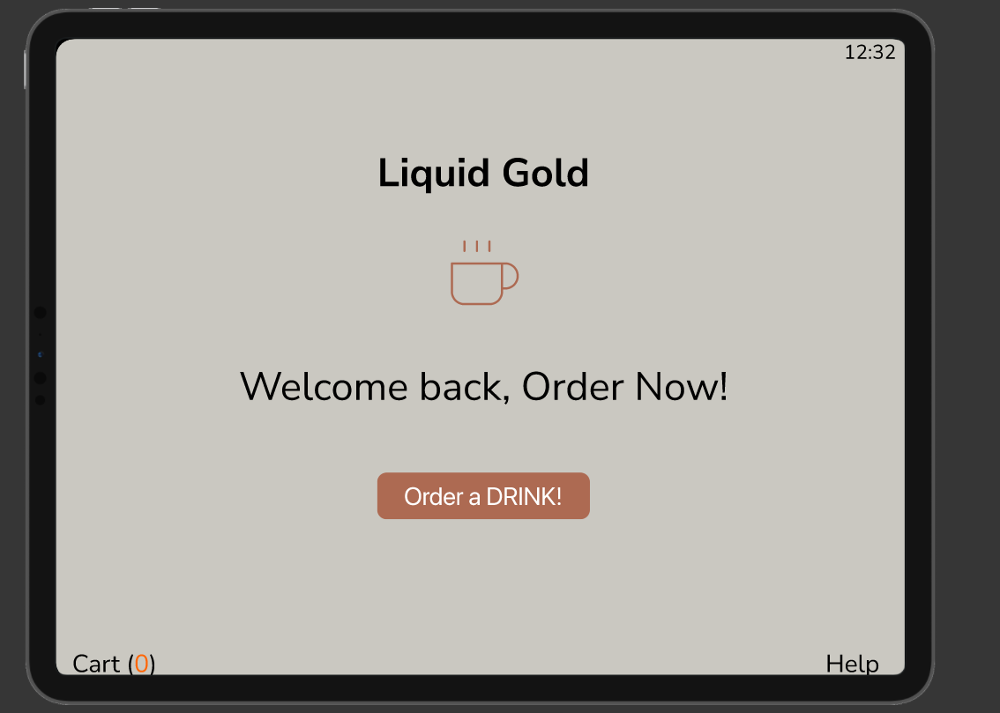
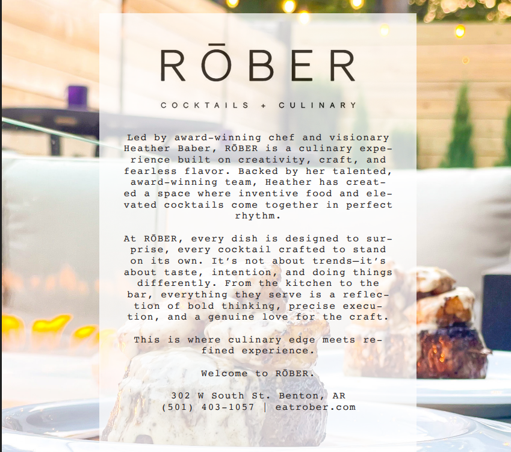
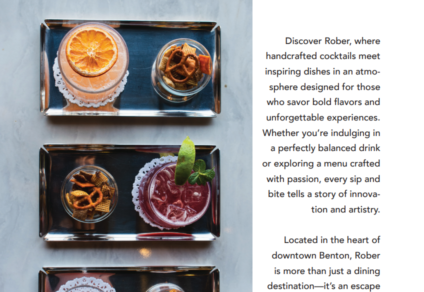

Web Example 1

This project was for Mobile Web Development (IFSC 3342). I based my project off the Buffalo River, intending to just share some quick facts, history, images, and videos about the river. This was a beginning and eye opening experience into desiging websites paying major attention to the mobile view.
Web Example 2

This was a project I helped Mason Mohler work on in IT-Garnet semester two, we were on a team with Destin Hill & Jakob Pearson called The Destination. This project was a lot of work from scratch, but also a major learning experience from me. I appreciated all my teamates help and guidance throught. I learned something new from each of them!
Programming Example 1

The AJAX unit Converter Project was a neat project. Honestly this project taught me that even simple little HTML pages with JavaScript in them can literally help you on a daily basis. I didn't realize the importance of Java really until this project. It didn't take a large amount of time to create this, which I also enjoyed.
Programming Example 2

The Calculator Assgiment was a very useful and unique assigment to dive into. It's quite basic, but it gets the job done. I can only imagine what goes into some database calculations, or even calculators others have made with JavaScript.
UX Prototype Project

This is a project from Prototyping Interactive Systems at Indiana Unversity. This project was for an assignment that I needed to protoype digitally a fake coffee shop.
Design Example 1

This is a project from Web Design that I made recently. It is based off a fake nonprofit intended to help the cause of deforestization and to discourge urbanization. The main purpose of the nonprofit is to encourge people to "Run for Wildlife. Protect Endangered Species".
Design Example 2

This is a publication design that I created for Graphic Design. It was meant to highlight a running style publication. Showcasing a main character, with a interview, and just overall helpful tips in regards to running.
Design Example 3

This was a magazine design for my job that was unpaid and all my own work. This magazine image was posted in the October 2025 edition of New York Magazine Bon Appetite.
Design Example 4

This was a magazine design for my job that was unpaid and all my own work. This magazine image was posted in the June 2025 edition of New York Magazine Bon Appetite.
Capstone Project

This was a WordPress non profit design that was created for the Lorenzo De Medici Foundation. This this website is unfortuantly not longer in use. Overall I learned a lot from this experinece and how to use content managment systems such as WordPress.